Тема,Мета,Місце розташування звіту,сайту
Тема: БЛОЧНА ВЕРСТКА HTML-ДОКУМЕНТУ ЗА МАКЕТОМ.
Мета: придбати практичні навички роботи верстки сторінок засобами CSS, верстки на основі плаваючих елементів, з’ясувати переваги та недоліки типів макетів веб-сторінок
Розташування: тут
Зовнішний вигляд макету
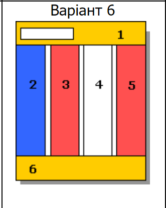
HTML код макету
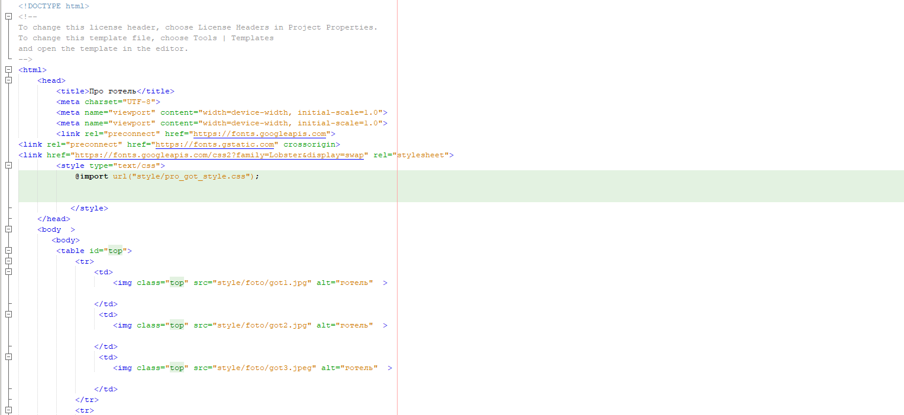
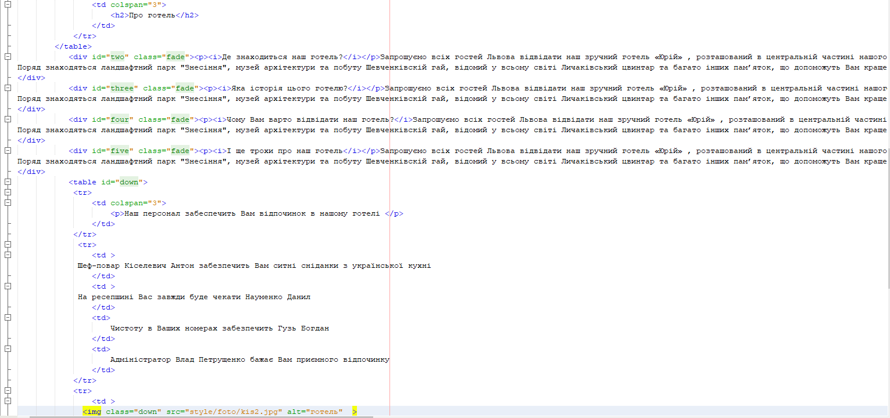
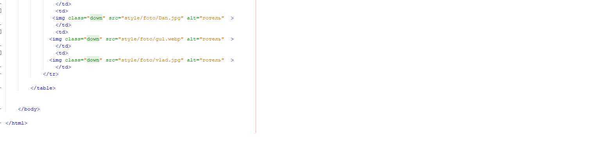
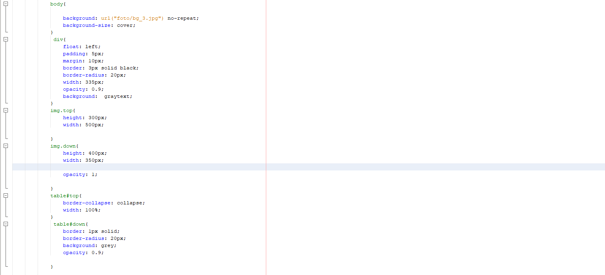
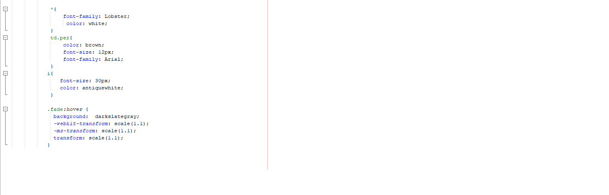
Розмітка сторінки за допомогою Таблиць
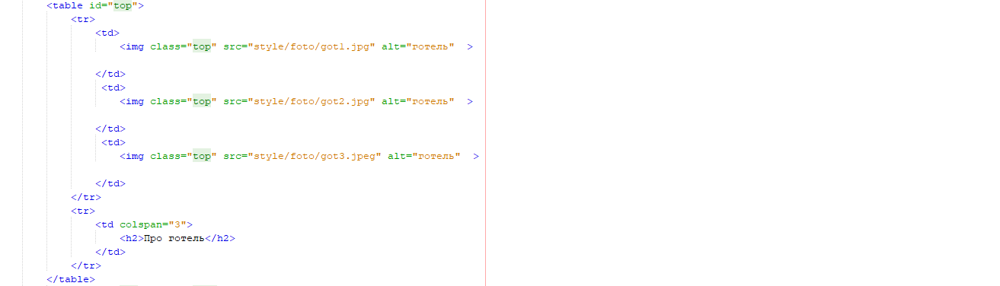
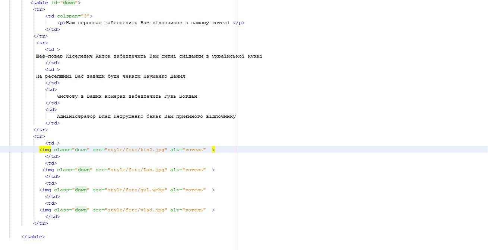
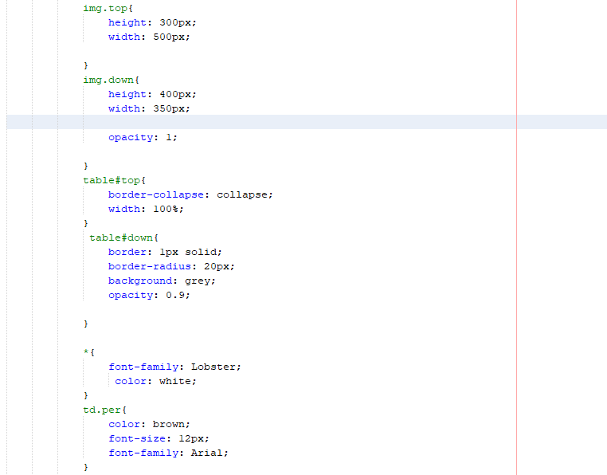
Розмітка сторінки за допомогою Плаваючих блоків
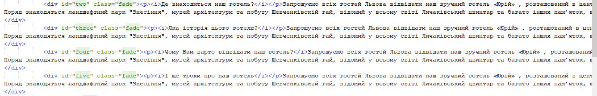
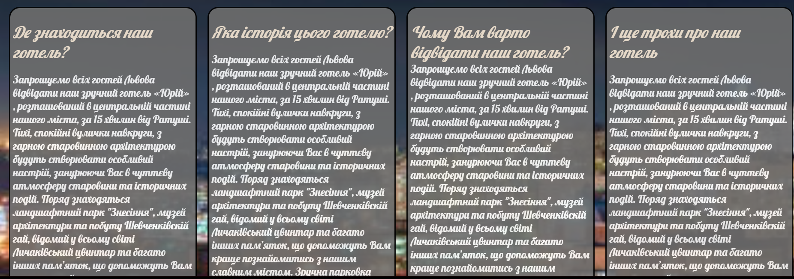
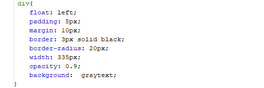
Висновок
На даній лабораторній роботі ми за допомогою плаваючих блоків і таблиць побудували макет HTML сторінки.